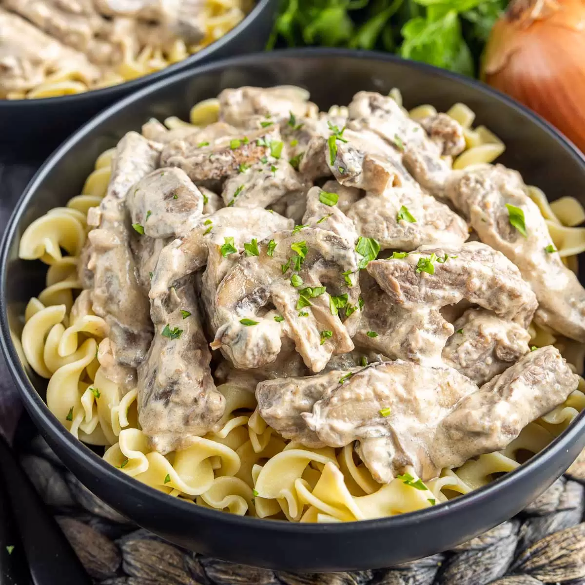

Stroganoff

Beefy, creamy Heaven
This is a real humdinger of a stroganoff recipe! One of the better things to come from the ruskies for certain. So good in fact
the dish has become an American comfort food. Combining beef and onions with a creamy roux-made sauce. A sprinkling of fresh
chopped parsley tops everything off.
Ingredients:
- 1 1/2 pounds top sirloin
- 1 teaspoon kosher salt
- 1 teaspoon ground black pepper
- 2 tablespoons unsalted butter, divided
- 1 tablespoon all-purpose flour
- 1 cup beef stock, preferably unsalted
- 1 tablespoon extra-virgin olive oil
- 1 medium onion, sliced 1/4-inch-thick lengthwise
- 3 tablespoons sour cream, at room temperature
- 1 tablespoon finely chopped fresh parsley, garnish
For Serving:
- Hot buttered noodles, not optional
Steps:
- Gather the ingredients.
- Pat the meat dry with paper towels. Cut the beef against the grain into
2-inch strips about 1/2 inch thick. Sprinkle meat with salt and pepper and set aside.
- Melt 1 tablespoon of the butter in a medium saucepan over medium heat.
- Blend the flour and cook, stirring constantly, for 2 minutes.
- Gradually pour in the beef stock, stirring and cooking until thickened and smooth.
- In a large skillet, heat the olive oil and the remaining tablespoon of butter over medium heat
until it shimmers. Add the sliced onion and cook, stirring frequently until the onion is tender
and translucent, about 4 minutes.
- Push the onion to one side of the skillet. Add the meat in batches and sear until light brown on
both sides. Once done, push the seared meat into the onion to make room for the next batch.
- Once all of the beef is browned, add the beef and onion to the thickened sauce. Cover and cook on
low, stirring occasionally, about 10 minutes.
- Take a tablespoon or two of the hot sauce and add to the sour cream; mix well. This is called tempering
and prevents the sour cream from curdling.
- Stir the sour cream into the sauce and heat through but do not boil.
- Arrange the beef stroganoff on a platter over buttered noodles, if desired, and garnish with the fresh chopped parsley.
- Enjoy.